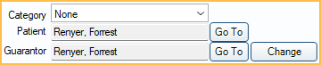
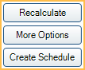
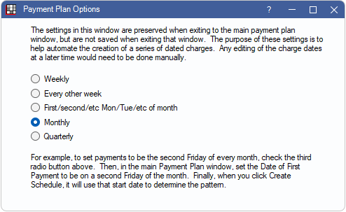
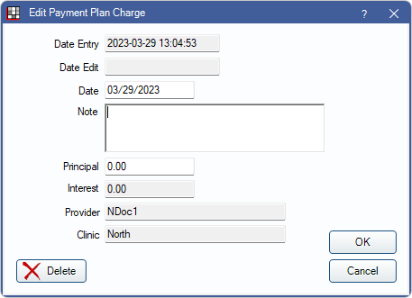
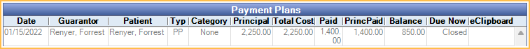

Old Payment Plan
Old Payment Plans were static patient repayment agreements.
In the Account Module Payment Plans grid, they show with the Type PP.

Old Payment Plans, formerly Patient Payment Plans, are a deprecated feature. Additional Old Payment Plans cannot be created. Existing Old Payment Plans can still be edited and payments can be attached to these plans. See Payment Plan to create new patient repayment plans.

To set when payments will be due, see Preferences, Days in advance to bill Payment Plan amounts due.
Related Links:
Find details about the Payment Plans grid (shown above) in the Old Payment Plans in the Account Module section of this page.
Patient Information
Category: Assign a category to this Old Payment Plan (e.g., Ortho, Implant). Useful to distinguish one payment plan from another when families have many plans. Customize the category options in Definitions: Payment Plan Categories.
Patient: The person who was treated. Click Go To to switch to their account. Patients can have multiple payment plans, and each plan can have a different guarantor.
Guarantor: The person who will make the payments. Defaults to the currently selected patient. The guarantor does not have to be in the same family as the patient. It also can differ from the account's guarantor. Click Change to select a different guarantor. Click Go To to switch to their account.
Provider Information

Provider: Defaults to the patient's primary provider. Click the dropdown or [...] to change. If using clinics and providers are restricted to clinics, only providers available for the selected clinic are available.
Clinic: If using clinics, defaults to the patient's clinic. Click the dropdown to change.
Term Options

Date of Agreement: Defaults to today's date.
Total Amount: The total amount of the Old Payment Plan, excluding interest. It defaults to the patient's current balance.
Date of First Payment: Date the first payment was due on the plan. Read-only on existing plans.
Down Payment: The amount of the down payment. Immediately due when the plan was created. Read-only on existing plans.
APR: Displays the percentage of interest charged. If entered, additional options are available to delay interest charges. If both fields are left blank, interest is charged to all scheduled payments. Fields are read-only on existing plans.
- No interest for the first [ ] payments: The number of payments before interest is applied.
- Interest start date: The date of the first interest charge.
Interest is automatically calculated using the following method:
- Subtracts the down payment from the plan balance.
- Calculates the number of payments, or the payment amount, based on the new balance (balance minus down payment).
The Amortization Schedule can be based on a total number of payments or a specific payment amount. Enter only one.
- Number of Payments: Enter the number of payments. Payment amount will calculate automatically.
- Payment Amount: Enter the payment amount. Number of payments will calculate automatically.
Term Buttons
Recalculate: Recalculate payments and interest (optional) when a patient prepays, pays on principal, or overpays. See Payment Plan Recalculate.
More Options: Select how often payments will be due based on the Date of First Payment. The default frequency is Monthly, however other options include every other week, specific day of a month (e.g., first Tuesday, etc.), or quarterly.
Create Schedule: Create the Amortization Schedule based on the terms. A description of the terms will show in the Note field.
Attaching Production
View Tx Credits: Attach production to the Old Payment Plan. Opens the Payment Plan Procedures and Credits window.
Plan Summary

Once the schedule is created or updated, calculations are automatic.
Total Cost of Loan: Total credits (not associated to procedures) and production amount attached to the plan plus interest.
Accumulated Due: Total amount that has been due up to the current date.
Paid so far: Total amount that has been paid towards the plan to date.
Principal paid so far: Total amount that has been paid towards the principal to date.
Tx Completed Amt: Total credits and completed procedure amount attached to the plan, excluding interest.
Total Tx Amt: Total credits, completed and treatment planned procedure amount attached to the plan, excluding interest.
Amortization Schedule

The Amortization Schedule is generated based on the terms. Principal and interest are calculated automatically. Due dates are based on the Date of First Payment and the frequency selected from More Options. Double-click a row to edit.
- A horizontal bold line indicates today's date and separates past items from future items.
- The amount currently due is bold.
- Payments attached to this plan show in the Payment column and affect the running balance. If extra payments show here, but shouldn't, uncheck the Attached to Payment Plan box on the Edit Payment Split window for each payment.
- Double-click an existing charge in the Amortization Schedule to edit. See Edit Pay Pan Charge section below for details.
Exclude past activity: When checked, only future dated line items show in the Amortization Schedule and past activity is hidden. When unchecked, all activity shows. Totals are not affected by this setting. To set the default setting for the checkbox, set the preference Payment Plans exclude past activity by default.
Current Totals: Automatically calculated based on current and past charges, accumulated payments, and the running balance.
Note

A detailed note of the terms is added automatically. Any changes made to the terms will be added to the note. Other notes can be added as needed. Right-Click the text box for additional options..
If Pay Plans use Sheets for printing is checked, additional Terms and Conditions are displayed when viewing or signing the repayment agreement. Customize the Payment Plan Terms and Conditions message in Preferences. Updating the terms updates any replacement fields used in the default message.
Buttons
Delete: Delete the entire plan. Also, clears any Authorized Recurring Charges attached to the plan. Payments cannot be attached.
Close Plan: Click to close a Payment Plan that is no longer being paid on (i.e., paid off or patient stopped making payments). See Close Old Payment Plan section below for details.
Add: Add a new payment plan Charge to the Amortization Schedule. See Edit Payment Plan Charge section below for additional details.
Add Adjustment: Add a negative payment plan adjustment to discount a portion of the payment plan balance (e.g., courtesy discount). The Negative Pay Plan Adjustment window will open. Enter the amount to adjust off the payment plan.

Pay plan adjustments automatically reduce the Total Amount, apply credits to future due amounts, and reduce the Total Tx Amt (via a credit in the Payment Plan and Procedures and Credits window). To also include an adjustment in the Patient Account ledger with today's date, check Also make line item in Account Module, this is not recommended when using the preference Pay Plan Charge Logic, Do Not Age (Legacy). Check box is only available if the logged-on user has the Adjustment Create permission.
- The amount of the adjustment cannot be more than the remaining payment plan balance due.
- Enter payments to the payment plan before adding payment plan adjustments; otherwise, the suggested paysplits to payment plan charges may not be available.
- To edit or delete a Payment plan adjustment, change the line item in the patient account, the Amortization Schedule, and in the Payment Plan Procedures and Credits window.
- Set the Payment Plan adj type in Preferences.
- If Also make line item in Account Module was checked, see Adjustment to attach the adjustment to a procedure.
eClipboard: Send this payment plan to eClipboard. See eClipboard: Payment Plans.
Clear Schedule: Erases the current Amortization Schedule, including adjustments (e.g., if terms have been changed and the schedule needs to be replaced).
Print: Click to print a copy of the payment plan Amortization Schedule and Terms or Payment Plan sheet.
Sign & Print: Displays instead of Print when the preference Pay Plans use sheets for printing is enabled and the PaymentPlan sheet contains a signature box. See Sign and Print Payment Plan.
Click OK to save changes, or Cancel to close without saving.
Close Old Payment Plan
Click Close when an Old Payment Plan has been paid off or patient has stopped making payments to close out the payment plan.
Closing out a plan does the following:
- Removes interest from future-dated charges.
- Clears the Recurring Charges for this Old Payment Plan.
- Automatically removes Payment Plan Procedures and Credits for treatment planned procedures, reducing Total Cost of Loan.
- Replaces future-dated charges with a single Close Out Charge for the remaining principal balance.
The Account Module, Show Tab setting Show Complete Pay Plans, determines whether closed payment plans are visible in the Payment Plans grid.
- If the setting is enabled, and the Pay Plan charge logic is set to Age Debits and Credits, closed plans are hidden from the grid, whether there is a positive or negative remaining balance.
- If the setting is disabled, and the Pay Plan charge logic is set to anything other than Age Debits and Credits, closed plans are hidden when the payment plan balance is 0. Closed plans with a positive or negative balance are hidden from the grid once the balance is 0.
To close multiple payment plans at once use the Close Payment Plans tool.
Edit Payment Plan Charge
Click Add to create an additional Pay Plan Charge on the Amortization Schedule or double-click an existing charge from the Amortization Schedule grid to edit.
- Date Entry: Read only. Date and time stamp when the Pay Plan Charge was originally created.
- Date Edit: Read only. Date and time stamp when the Pay Plan Charge was most recently edited.
- Date: Defaults to the date entry, but can be changed. This is that date displayed in the Amortization Schedule grid.
- Note: Displays in the Description column of the Amortization Schedule. The text "Down Payment" is not allowed as Down Payments cannot be edited. Right-click the text box for additional options.
- Principal: Pay Plan Charge amount not including interest.
- Interest: Read only. This is automatically calculated based on Terms and Principal.
- Provider: Read only. Provider assigned to the plan.
- Clinic: Read only. Clinic assigned to the plan.
Click Delete to remove a charge from the Amortization Schedule. This recalculates the Total Amount.
Click OK to save changes. If adding a new charges or changing Principal amount, the Total Amount is recalculated.
Editing an Existing Payment Plan
To edit individual payment plan charges, double-click the charge from the Amortization Schedule. The payment plan charge interest field is read-only. If APR is included in the plan terms, charges cannot be added or edited; however, users with the Pay Plan Charge Date Edit Permissions may edit the charge due dates.
To delete a payment plan charge, double-click the charge from the Amortization Schedule and click Delete or, right-click the posted PayPln: Debit from the Patient Account and click Delete Charge. The right-click option is only available when the Pay Plan charge logic preference is set to Age Credits and Debits. Payments cannot be attached to the charge. If a charge is deleted, update the Payment Plan Procedures and Credits and use Payment Plan Recalculate.
To edit Old Payment Plans with overcharged production, see Payment Plan Q and A.
View or Reopen Closed Payment Plans
Payment plans that have been closed are still available to view or to reopen if needed. Only open payment plans can be edited; changing historical information is not recommended.
To show closed payment plans in the Payment Plan grid:
- In the Account Module, click the Show tab.
- Check the box for Show Completed Pay Plans. This affects all workstations.
All closed plans for the patient are listed in the Payment Plan grid in a light gray text color.
To reopen a closed Old Payment Plan:
- Double-click the closed plan to open the Old Payment Plan window.
- In the lower right, click Reopen.

Only past activity shows in the Amortization Schedule. To reinstate the Old Payment Plan, a new Amortization Schedule must be created.
Old Payment Plans in the Account Module
Payment Plans Grid
A summary of all Payment Plans (including Old Payment Plans, Payment Plans, and Insurance Payment Plans) and Installment Plans associated with the current patient is shown at the top of the Account Module. Plans associated with the patient are those the patient is assigned as the guarantor or patient.
- Date: Date of Agreement.
- Guarantor: Name of guarantor assigned to the payment plan.
- Patient: Name of patient associated with the payment plan.
- Type: Type of payment plan. PP indicates Old Payment Plan.
- Category: Assigned category of paymentplan.
- Principal: Total principal of payment plan (i.e., Total Cost - Interest).
- Total Cost: Total cost of loan (i.e., Principal + Interest).
- Paid: Total amount of payment plan paid to date. Includes principal and interest.
- PrincPaid: Total amount of principal paid to date.
- Balance: Total remaining unpaid PayPlanCharges, regardless if currently due. Includes principal and interest.
- DueNow: Total of all PayPlanCharges currently due. Includes principal and interest.
- eClipboard: Shows an X if the payment plan has been sent to an eClipboard device.
Patient Account Grid
PayPlan Credits, PayPlan Debits, and payments attached to payment plans can optionally show as line items in patient accounts and affect balances and aging. This is determined by Pay Plan charge logic in Preferences. See more information in Payment Plan Q and A.